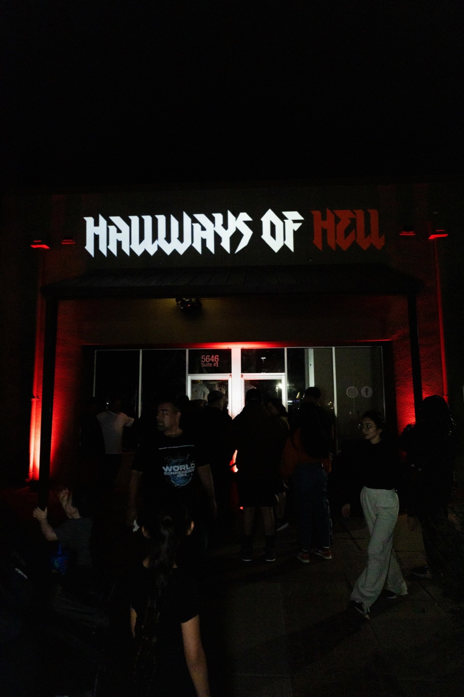
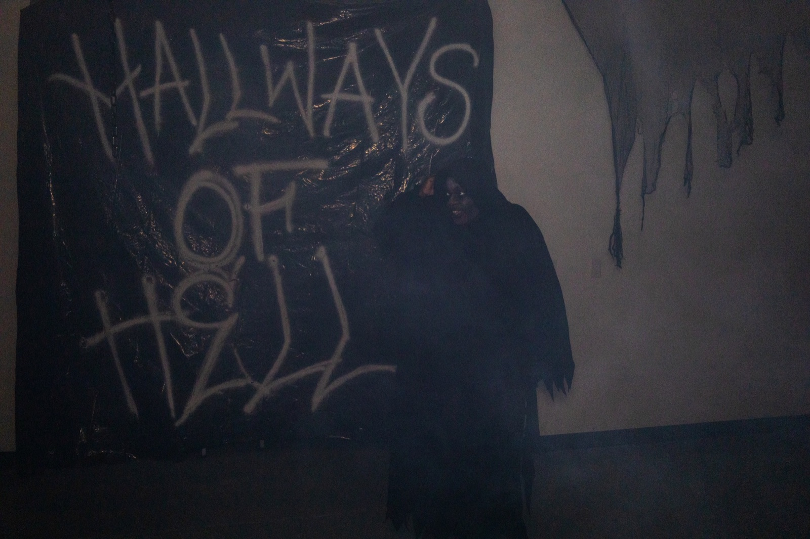
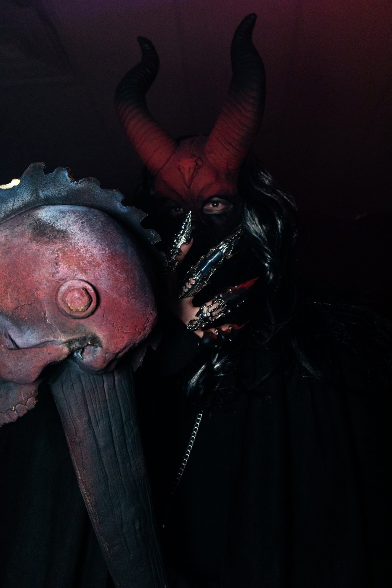
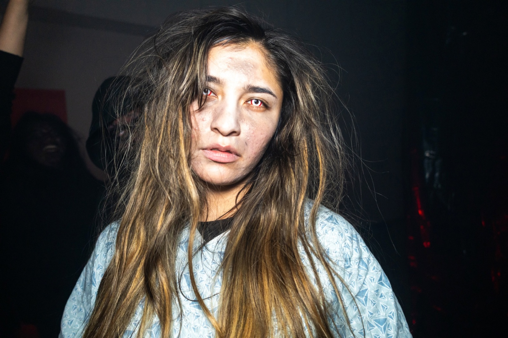
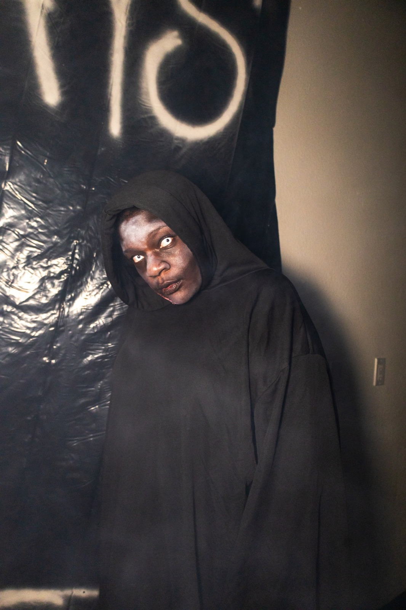
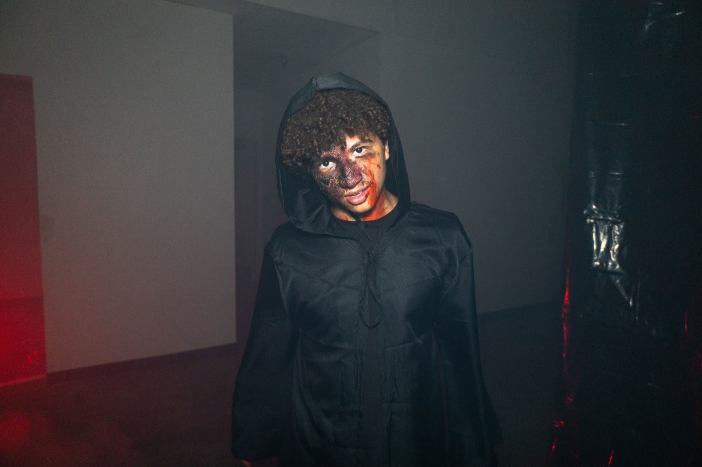
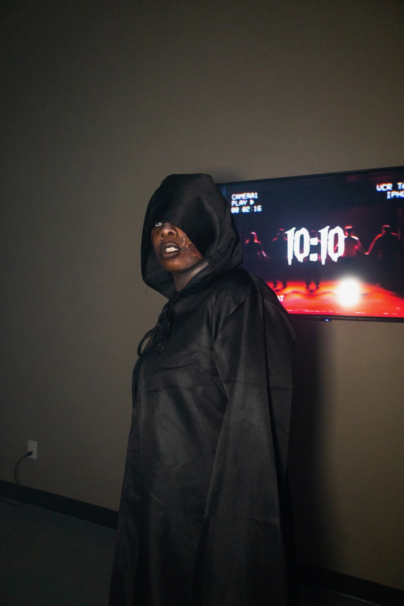

Hallways of Hell · Haunted Maze in Mesa, AZ
The hallways
have gone
quiet.
Thank you, Mesa.
Thank you to everyone who stepped inside Hallways of Hell in 2026. Your support made this year’s experience possible.
Mesa’s Only Reality Horror Maze · An annual 18+ Halloween haunted maze in the East Valley · Returning October 2027
HALLWAYS OF HELLANNUALMESA, ARIZONA
01 / GET NOTIFIED
THE NIGHTMARE WILL RETURN
Hear from us
next season.
Hallways of Hell will return in October 2027. Sign up to hear when dates and ticket details are announced, and for future promotions.
Hallways of Hell is presented by Victory Outreach Mesa.
02 / ABOUT THE ATTRACTION
INDEPENDENT. ANNUAL. IN MESA.
A reality
all its own.
Hallways of Hell is an independent, annual 18+ haunted maze in Mesa, Arizona. Known as Mesa’s Only Reality Horror Maze, it brings an immersive, walk-through horror experience to the East Valley every October, just a short drive from Gilbert, Chandler, Queen Creek, Apache Junction, and Tempe.
Unlike a typical haunted house, Hallways of Hell is a reality horror maze: guests follow a guide through dark hallways where live performers bring real-life horrors to the surface. Hallways of Hell is presented by Victory Outreach Mesa.
Explore the 2026 archive, look back through the gallery, or join the update list for news about a future Halloween season.
Explore the 2026 archive ↓03 / THE 2026 EXPERIENCE ARCHIVE
EVENT COMPLETE · OCTOBER 30 + 31, 2026
Two nights.
Remembered.
The 2026 event has concluded. Explore the details from each night below.
Mesa, AZ 85205Open in Maps ↗
THANK YOU, MESA.
The 2026 Hallways are now part of the archive.
04 / FROM LAST YEAR’S HALLWAYS
A GLIMPSE INSIDE
Last year
left marks.
Step back into the shadows of Hallways of Hell 2025.
01 / 09







SWIPE OR SCROLL TO KEEP LOOKING →
05 / 2026 ARCHIVE · BEFORE YOU ENTER
2026 ADMISSION INFORMATION
The rules
of the maze.
These requirements and rules applied to the 2026 event. Future season details have not been announced.
Admission Requirements
0118 years of age or older
All guests must be 18 or older.
02Valid photo ID
Valid photo ID may be required.
03Good physical and mental health
The experience includes darkness, loud noises, strobe/flashing lights, confined spaces, sudden movements, and intense horror effects. Content warning: The maze depicts drug abuse, physical and sexual abuse, suicidal ideation, and other sensitive topics.
04Signed waiver required
Every participant must complete and sign the required liability waiver before entering.
05No intoxication
Guests who appear to be under the influence of alcohol or drugs will not be permitted to enter.
06Proper footwear required
Closed-toe shoes are strongly recommended.
07Health conditions
Guests with heart conditions, respiratory conditions, seizure disorders, severe anxiety/claustrophobia, or other medical conditions that could be affected by an intense haunted attraction should not participate.
08Enter at your own risk
By entering, guests acknowledge the physical and psychological nature of the experience and agree to follow all staff instructions.
Maze Rules
01Weapons, sharp objects, and face coverings
Weapons or sharp objects are not allowed inside the maze. Masks and face coverings are not permitted.
02No physical contact
Physical contact with characters or staff is not permitted. Do not touch, grab, push, hit, or interfere with performers.
03Follow your guide and stay on the path
Follow your guide’s instructions throughout the maze. Stay on the designated path and do not enter restricted areas. If you need assistance or wish to exit, notify a staff member and follow their instructions.
04No running
Running is not allowed inside the maze.
05Respect guests, characters, and staff
Inappropriate, threatening, disruptive, or harassing behavior will not be tolerated. Hallways of Hell reserves the right to refuse entry or remove anyone who violates these rules or creates a safety concern.
06No smoking, flames, food, or drinks
Smoking, vaping, open flames, food, and drinks are not allowed inside the maze.
07Do not interfere with props or sets
Do not damage, move, or interfere with props, sets, or equipment.
08No filming or photography
Filming or photography is not allowed unless specifically authorized by Hallways of Hell staff.
06 / QUESTIONS FROM THE DARK
WHAT TO KNOW
Before you
enter.
What is Hallways of Hell?
Hallways of Hell is an annual 18+ Halloween haunted maze in Mesa, Arizona, known as Mesa’s Only Reality Horror Maze. It is presented by Victory Outreach Mesa.
Is there a haunted maze in the East Valley?
Yes. Hallways of Hell is a haunted maze in Mesa, Arizona, in the heart of the East Valley. It runs each October around Halloween and is a short drive from Gilbert, Chandler, Queen Creek, Apache Junction, and Tempe. It returns in October 2027.
When will Hallways of Hell return?
Hallways of Hell will return in October 2027. Exact dates and ticket details have not been announced. Use the email and/or text signup on this page to be notified first.
Where is Hallways of Hell located?
Hallways of Hell is at 5646 E. Main Street, Mesa, Arizona 85205, in East Mesa.
Is Hallways of Hell a haunted house or a haunted maze?
Hallways of Hell is a walk-through haunted maze, a type of haunted house attraction. Guests follow a guide through dark hallways and scenes with live performers. It is presented as a reality horror maze.
What is a reality horror maze?
It is how Hallways of Hell describes its Halloween attraction: instead of fantasy monsters alone, its scenes depict real-life horrors, including drug abuse, physical and sexual abuse, and suicidal ideation. Guests should also expect darkness, loud noises, strobe or flashing lights, confined spaces, sudden movements, and intense horror effects.
Is Hallways of Hell for kids?
No. The 2026 event was for guests 18 and older because of its intense and mature content. Age requirements for 2027 will be announced with the dates.
Are tickets available?
The 2026 event has concluded and tickets are no longer available. Hallways of Hell will return in October 2027; exact dates and ticket details have not been announced.
When was the 2026 event?
The 2026 event took place Friday, October 30 from 7:00 PM to 11:00 PM and Saturday, October 31 from 6:00 PM to 10:00 PM.
What should I know about the 2026 admission requirements?
Guests had to be 18 or older and complete a signed waiver. Valid photo ID may have been required. The maze included darkness, loud noises, strobe or flashing lights, confined spaces, sudden movements, intense horror effects, and depictions of drug abuse, physical and sexual abuse, suicidal ideation, and other sensitive topics. Future requirements may differ.
07 / VISIT MESA
THE EAST VALLEY’S HORROR WAITS
Find the
entrance.
Hallways of Hell
5646 E. Main StreetMesa, AZ 85205
An annual Halloween attraction presented by Victory Outreach Mesa.
Open in Maps ↗MESA’S ONLY REALITY HORROR MAZE
The nightmare
returns October 2027.
AN ANNUAL HALLOWEEN ATTRACTION · MESA, AZ
Get Future Updates ↓ Follow Hallways of Hell on Instagram ↗